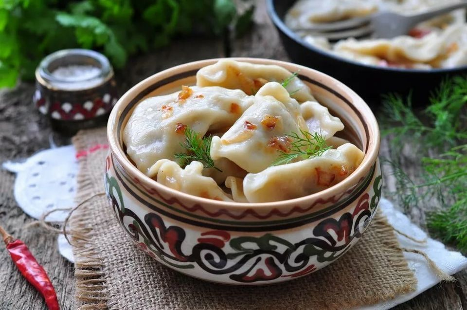

Vareniki

Vareniki or varenyky is a staple dish in Russian and Ukrainian cuisines. They are half-moon shaped dumplings that are boiled in salted water.
Vareniki fillings may vary, but the most common version is the potato version. Depending on the filling, they can be served as a starter or as a dessert. It is customary to accompany varenieki with Russian sour cream called smetana
Ingredients
- 2 cups flour
- 2 eggs
- 1/2 cup milk
- 2 TB vegetable oil
- 1 teaspoon salt
- 1lb potatoes
- 2 onions
- 1/2 cup milk
- 4 TB butter
Steps
- Heat the vegetable oil in a frying pan and fry the onions over medium heat, stirring regularly until they are golden brown, then drain them of their oil and place on plate lined with paper towel.
- Peel and boil the potatoes in a large amount of lightly salted water.
- Drain the potatoes using a large skimmer and keep the boiling water for cooking.
- Place the cooked potatoes in a large bowl and, using a potato masher, mash the potatoes, gradually adding the boiling milk. Add the butter and, optionally, a little boiling water from the potatoes and mix until a slightly firm consistency is obtained.
- Add the fried onions and mix. Season with salt and pepper. Set aside.